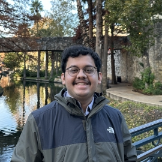

Anuj Diwan
I am a fourth year PhD student in the Computer Science Department at the University of Texas at Austin. I am fortunate to be co-advised by Prof. David Harwath and Prof. Eunsol Choi. I am part of the broader UT NLP group.
My research interests are in the fields of Speech and Natural Language Processing. My current research focuses on stylistic and multilingual speech generation.
I received my B.Tech (with Honors) degree in Computer Science and a Minor degree in Statistics from IIT Bombay in 2021, where I had a wonderful time working with Prof. Preethi Jyothi and Prof. Sunita Sarawagi.
I have also spent some time interning at Google DeepMind (Summer 2023, with Yu Zhang and Ankur Bapna), Meta AI (Summer 2022, with Abdelrahman Mohamed, Wei-Ning Hsu and Ching-Feng Yeh), Adobe Research India (Summer 2020) and UCLouvain (Summer 2019).
In my spare time, I enjoy reading, quizzing, solving wordgames, and watching the latest movies and TV shows.
Publications
Textless Speech-to-Speech Translation With Limited Parallel Data
EMNLP 2024 Findings
Zero-shot Video Moment Retrieval With Off-the-Shelf Models
TL4NLP@NeurIPS 2022
Reduce and Reconstruct: ASR for Low-Resource Phonetic Languages
Interspeech 2021
Education
PhD in Computer Science
University of Texas at Austin
Advisors: Prof. David Harwath and Prof. Eunsol Choi
B.Tech in Computer Science and Engineering (with Honours)
Indian Institute of Technology Bombay
Minor in Statistics
Experience
Student Researcher
Google DeepMind, Mountain View, CA
Worked on multilingual speech generation.
AI Research Intern
FAIR, Meta AI, Seattle, WA
Worked on continual learning for on-device speech recognition.
Research Intern
Adobe Research, Bangalore, India
Research Intern
UCLouvain, Belgium